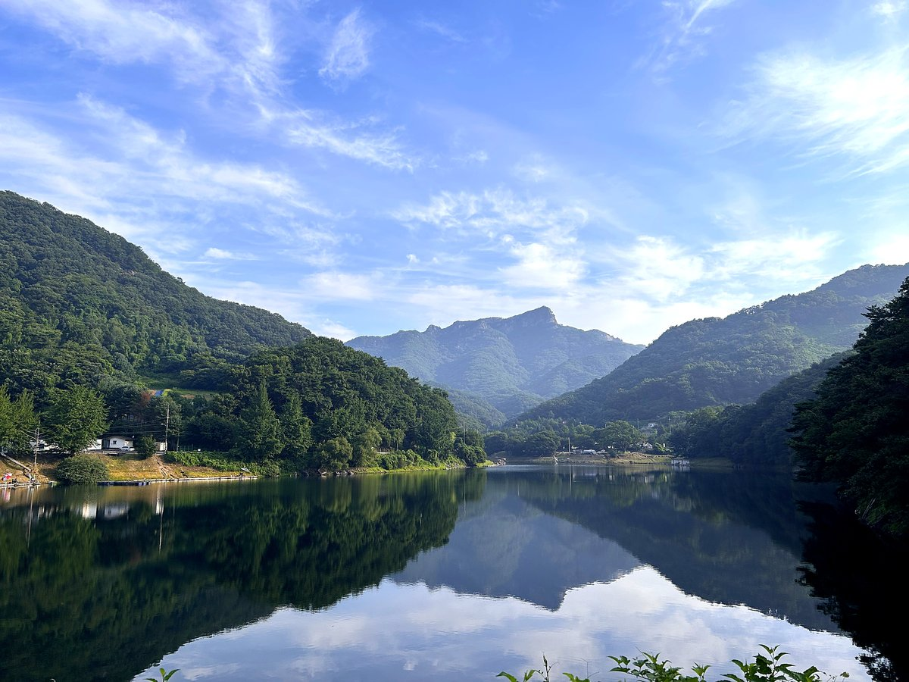
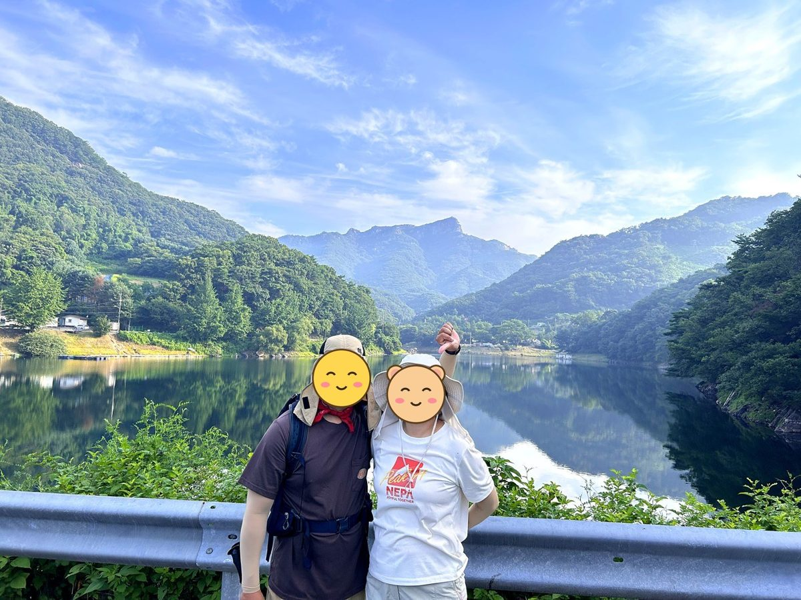
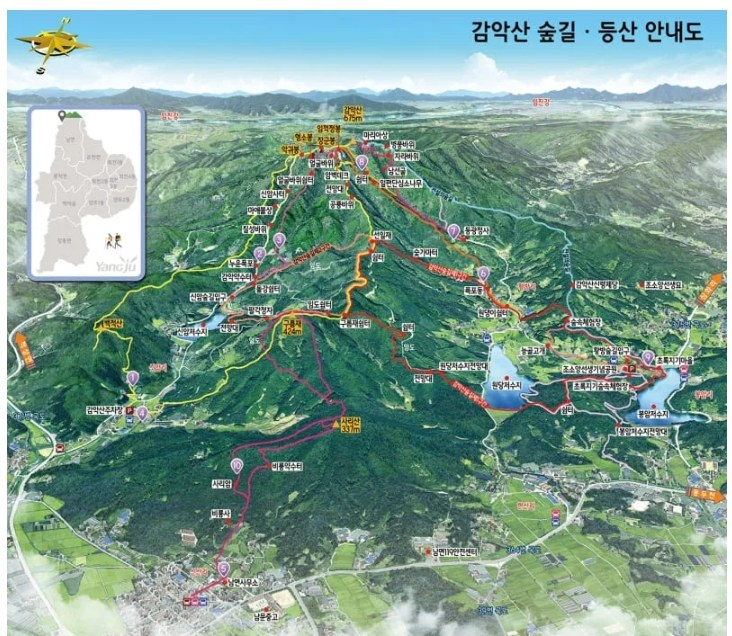
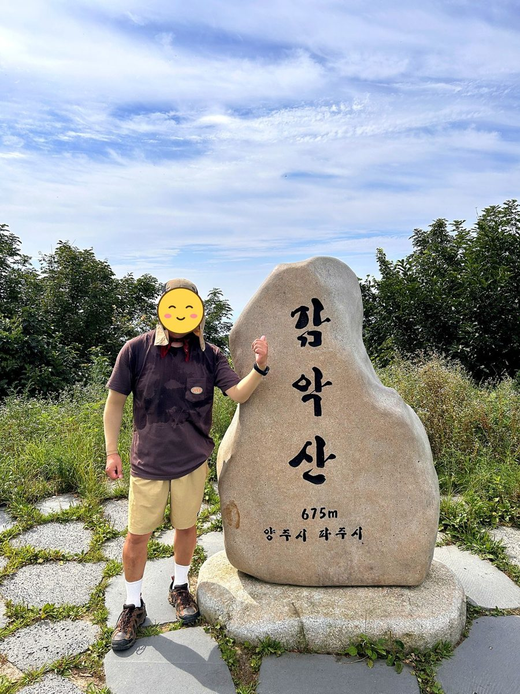
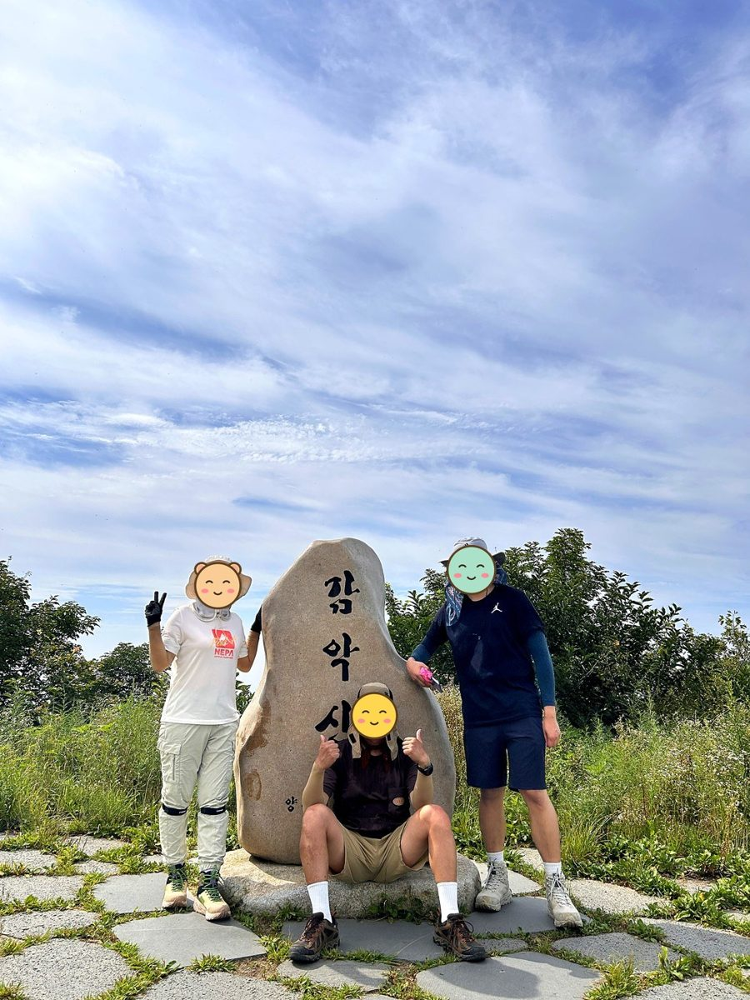
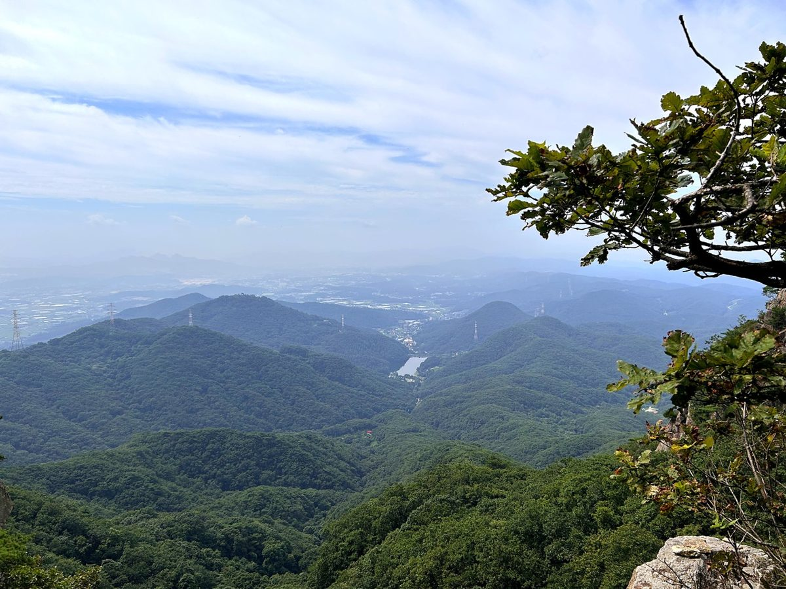
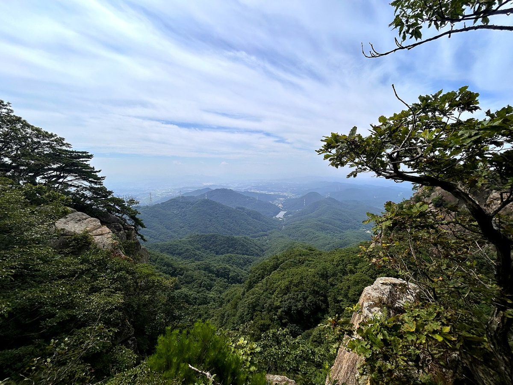
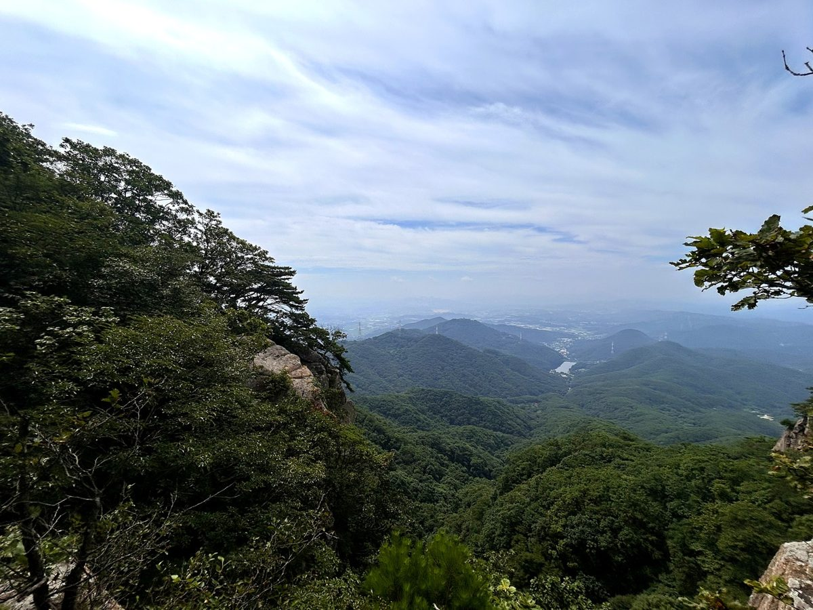
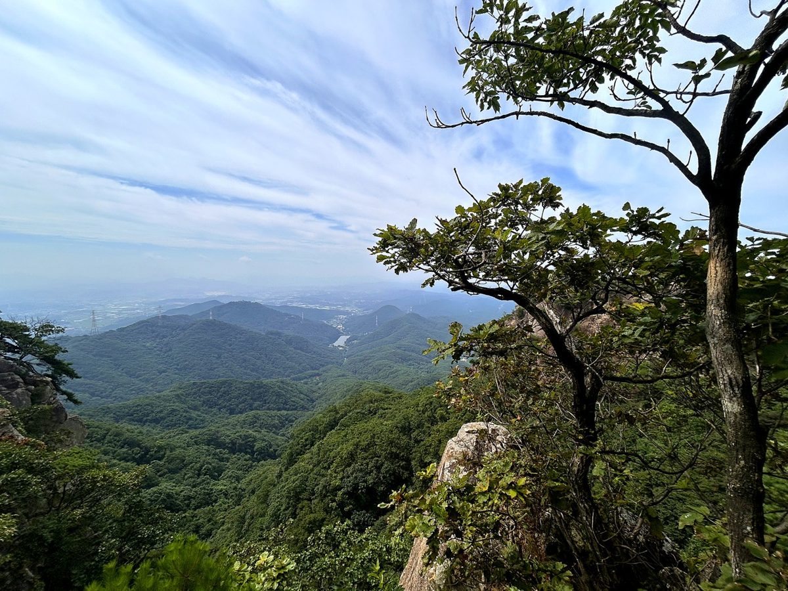
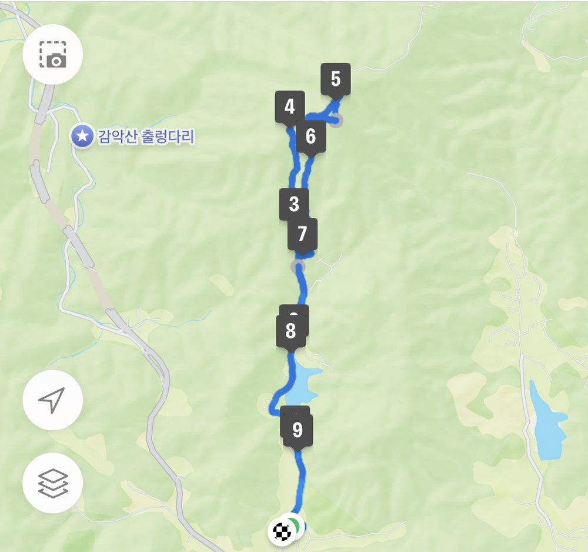

파주 감악산은 등산객보다 나들이객이 더 많이 찾는 산입니다. 들머리에서 1km 남짓 오르면 나오는 출렁다리 때문인데, 이 다리만 보고 돌아가는 사람도 적지 않습니다.
출렁다리와 범륜사를 왕복하는 코스가 4.2km, 2시간으로 가장 짧습니다. 다만 출렁다리를 건너 범륜사로 가는 시멘트 포장길이 생각보다 가파릅니다.
정상까지 제대로 오르려면 4~5시간을 잡아야 합니다. 여기서 중요한 건 출렁다리가 일몰에 닫힌다는 점입니다. 하산길에 다리가 통제되면 곤란해지니 일몰 5시간 전에는 출발해야 합니다.
등반기록
신암저수지 숲속야영장 주차장 → 신암저수지 → 누운폭포 → 칠성바위 → 악귀봉 → 장군봉 → 정상 → 얼굴바위 → 누운폭포 회귀
신암저수지에 비친 감악산
토요일 아침 7시 20분, 신암저수지 숲속야영장 주차장에서 출발했어요. 큰아들과 함께한 오랜만의 등산이었어요.
이 코스에서 가장 인상적이었던 건 시작하자마자 만나는 신암저수지예요. 저수지 너머로 감악산 정상이 보이는데, 잔잔한 물 위에 산이 그대로 비친 모습이 정말 끝내줘요.

누운폭포, 칠성바위 지나 능선으로
저수지를 지나 누운폭포와 칠성바위를 거쳐 능선에 올랐어요. 악귀봉과 장군봉을 차례로 넘어 정상으로 이어져요.
능선에는 양주시에서 만든 하늘길 데크가 잘 놓여 있어서 걷기 편했어요.

감악산 정상, 675m
9시 40분쯤 정상에 도착해서 정상석 앞에서 인증샷을 남겼어요.


얼굴바위 쪽으로 하산
하산은 얼굴바위 방향으로 내려와 누운폭포에서 올라온 길과 다시 만났어요. 내려오는 길에도 소나무 사이로 시야가 탁 트여요. 총 9.8km, 5시간 3분이 걸렸어요.





다음에 갈 사람을 위한 팁
- 많이 알려진 출렁다리 코스보다 개인적으로는 이 신암저수지 코스가 더 마음에 들었어요.
- 출발 전에 신암저수지에서 감악산 정상 쪽을 꼭 바라보세요. 물에 비친 모습은 바람 없는 아침이 가장 좋아요.
- 양주시에서 만든 하늘길 데크가 잘 되어 있어서 능선 구간을 편하게 걸을 수 있어요.
저수지에 비친 감악산 정상과 잘 정비된 하늘길 데크 덕분에 출렁다리 코스보다 더 마음에 든 코스예요. 큰아들과 오랜만에 함께 걸어서 더 좋았어요.
이 산의 포인트
- 감악산 출렁다리 — 들머리에서 1km 지점
- 출렁다리·범륜사 왕복 4.2km·2시간
- 출렁다리는 일몰에 폐쇄 — 하산 시각 주의
- 원주 감악산과 이름이 같은 별개의 산
등산 코스
| 코스 | 거리 | 소요 | 난이도 |
|---|---|---|---|
| 출렁다리·범륜사 왕복 (입문) 주차장 → 출렁다리 → 범륜사 → 원점 |
약 4.2km | 2시간 | 하 |
| 정상 순환 주차장 → 출렁다리 → 범륜사 → 능선 → 감악산 정상 → 하산 |
약 7km | 4~5시간 | 중 |
| 신암저수지 코스 (양주 방면) 🥾 나의 기록 신암저수지 숲속야영장 주차장 → 신암저수지 → 누운폭포 → 칠성바위 → 악귀봉 → 장군봉 → 정상 → 얼굴바위 → 누운폭포 → 원점 |
약 9.8km | 5시간 내외(휴식 포함) | 중 |
인증장소
감악산 정상 표지석 앞에서 인증합니다. 강원 원주의 감악산과는 다른 산이니 목록에서 지역을 확인하세요.
가는 길
- 자가용
- 감악산 출렁다리 주차장을 이용합니다. 주말에는 매우 붐빕니다.
- 대중교통
- 파주·의정부 방면에서 버스로 접근할 수 있습니다.
주차장
- 범륜사 주차장(감악산 제1주차장)경기 파주시 적성면 설마리
출렁다리와 등산로 입구가 붙어 있어 가장 붐빕니다. 주말 오전에는 아래 임시주차장으로 안내됩니다.
- 운계전망대 아래 임시주차장경기 파주시 적성면 설마리
제1주차장이 찼을 때 쓰는 예비 공간입니다.
- 신암저수지 숲속야영장 주차장경기 양주시 남면 신암리
양주 방면 신암저수지 코스의 들머리입니다. 출렁다리 쪽보다 한적합니다.
주차 요금과 면수는 자주 바뀌고 성수기에는 임시 주차장·셔틀이 운영되기도 합니다. 출발 전에 지도 앱이나 공원 사무소로 한 번 더 확인하세요.
맛집
파주 적성은 두부와 장단콩의 고장입니다. 임진강 가에서는 매운탕과 참게장을, 마을 쪽에서는 두부전골과 제육쌈밥을 냅니다.
- 가월리손두부들머리에서 3.5km경기도 파주시 적성면 감악산로 1473
- 미식 쌈밥들머리에서 10.1km경기도 동두천시 신천로231번길 35-11 (안흥동)
- 두포나루터들머리에서 10.7km경기도 파주시 율곡로 829 두포나루터
- 대교설렁탕들머리에서 4.8km경기도 연천군 백학면 청정로46번길 24
- 두포리매운탕들머리에서 10.6km경기도 파주시 파평면 율곡로 833
한국관광공사에 등록된 음식점입니다. 맛집 순위가 아니며, 영업시간과 휴무일은 바뀔 수 있으니 먼 길이라면 미리 전화해 보세요.
언제 가면 좋은가
봄가을이 좋습니다. 출렁다리 일대는 주말마다 붐비니 이른 시간에 도착하는 편이 좋습니다.
알아두면 좋은 것
- 출렁다리가 일몰에 닫히므로 정상까지 갈 계획이면 일몰 5시간 전에 출발하세요.
- 출렁다리~범륜사 포장길이 가팔라 초반에 힘을 뺄 수 있습니다.
- 나들이 인파와 등산객이 섞여 초입 구간이 특히 혼잡합니다.
- 출렁다리 쪽이 붐비는 날에는 양주 방면 신암저수지 코스가 대안입니다. 저수지에 비친 감악산 정상이 보이고, 능선에는 하늘길 데크가 놓여 있습니다.